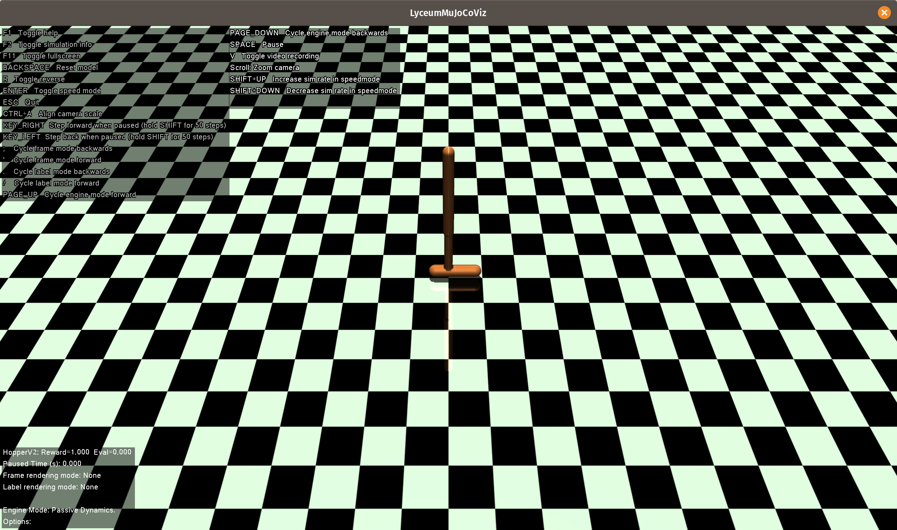

This example and more are also available as Julia scripts and Jupyter notebooks.
See the how-to page for more information.
Using the Visualizer
Overview
In this example, we walk through how to use LyceumMuJoCoViz.jl to playback saved trajectories and interact with a saved policy in real time using the policy we learned in the "Learning a control policy" example.
The Code
First, let's go head and grab all the dependencies:
using LyceumAI # For `NaturalPolicyGradient` and `DiagGaussianPolicy`
using Shapes # For the `allocate` function
using LyceumMuJoCo # For the HopperV2 environment
using LyceumMuJoCoViz # For the visualizer itself
using FastClosures # For helping avoid performance issues with closures, discussed below
using JLSO # For loading saved dataHere we demonstrate two modes of visualizing results of an algorithm like NaturalPolicyGradient or MPPI from LyceumAI: playing back saved trajectories and interacting with a policy or controller in real time. For the former, we need only pass to the visualize function our saved trajectories as a vector of matricies, where each element of the vector is a matrix of size (length(statespace(env)), T), where T is the length the trajectory. Note that each trajectory can be of a different length. For the latter, we pass a control callback to visualize that will be called each time step!(env) is called.
function viz_hopper_NPG()
# Load our experiment results
x = JLSO.load("/tmp/hopper_example.jlso")
env = LyceumMuJoCo.HopperV2()
# Load the states from our saved trajectory, as well as the learned policy.
states = x["stocstates"].states
pol = x["policy"]
# Allocate some buffers for our control callback.
a = allocate(actionspace(env))
o = allocate(obsspace(env))
# As discussed in the Julia performance tips, captured variables
# (e.g. in a closure) can sometimes hinder performance. To help with that,
# we use `let` blocks as suggested.
ctrlfn = let o = o, a = a, pol = pol
function (env)
getobs!(o, env)
a .= pol(o)
setaction!(env, a)
end
end
visualize(env, controller = ctrlfn, trajectories = states)
endviz_hopper_NPG (generic function with 1 method)Now just call the function to see the visualizer appear!
viz_hopper_NPG()You should see the following: 
This page was generated using Literate.jl.